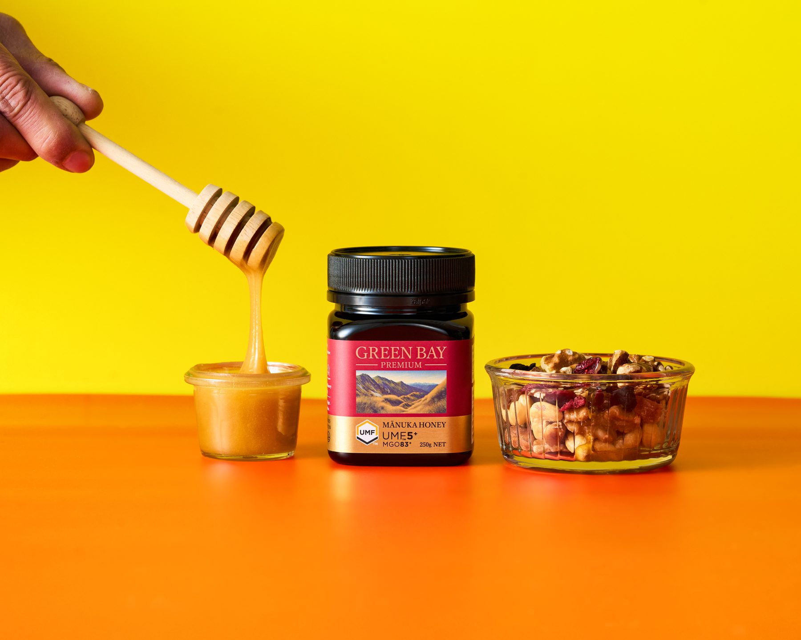
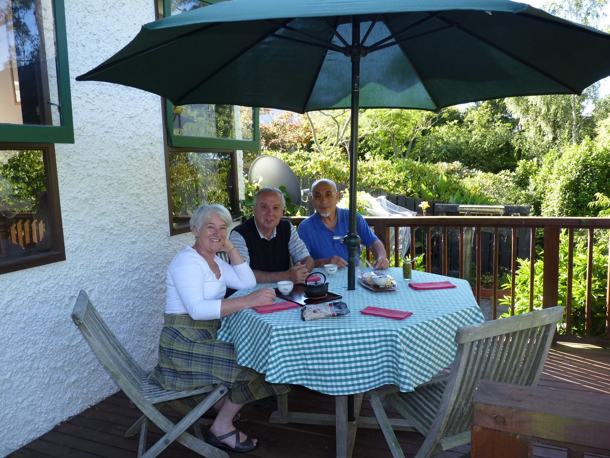
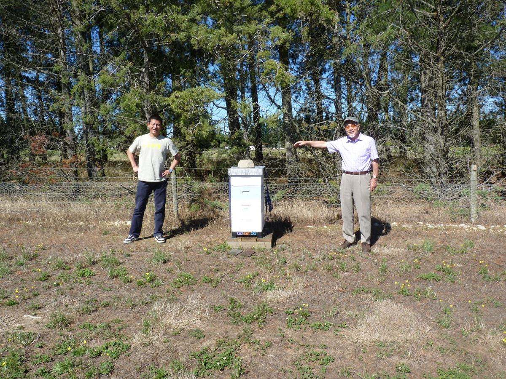
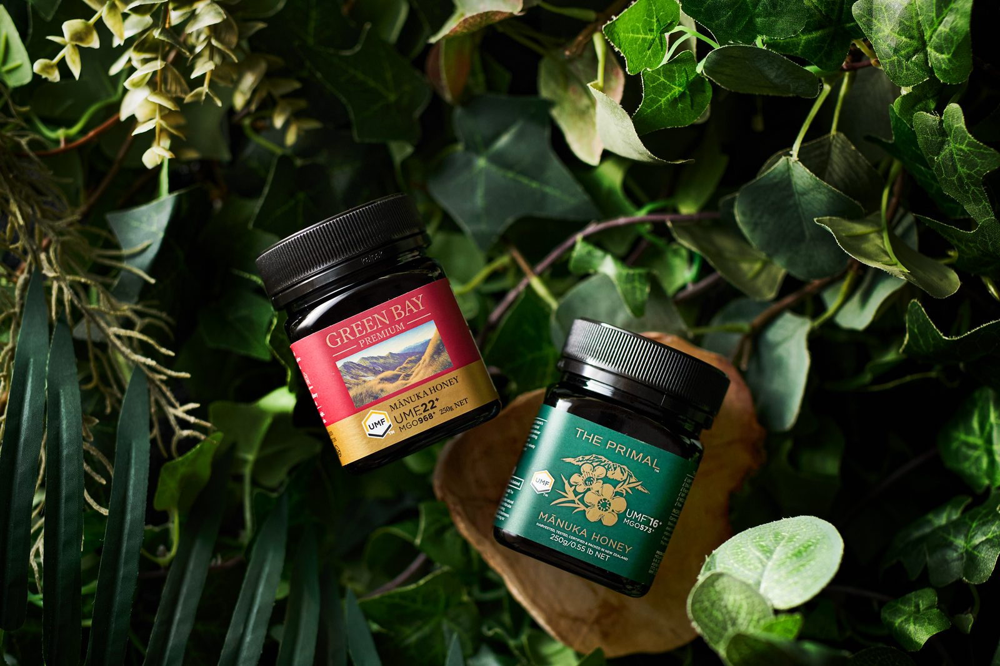

楽天スーパーSALE終了まであと
0
0
0
0
日
0
0
0
0
時間
0
0
0
0
分
0
0
0
0
秒
2006 — 2026
ニュージーランドの現場に毎年通い、本当にお薦めできるものだけを。マヌカハニー専門グリーンベイの楽天出店20周年を迎えることができた感謝を込めて企画をご用意しました。ぜひご覧ください。

9月中ずっと！ 楽天出店20周年記念福袋
UMF10＋ と UMF15＋ の食べ比べセット。「10＋15＋開店20周年福袋セット50％OFFクーポン」をお使いいただくと、9月の会期を通して半額でお求めいただけます。
まずはこのセットで、グリーンベイのマヌカハニーの風味の違いを確かめていただけたらうれしいです。
※クーポンの獲得URLは、配布開始後にこのページへ反映します。利用条件・発行数は楽天市場のクーポンページをご確認ください。
楽天スーパーSALE
日付をタップすると、その日程のクーポンページへ移動します。
SEPTEMBER 2026
※各クーポンの利用条件・発行数・対象商品は、リンク先の楽天市場店の特集ページをご確認ください。日程は変更となる場合があります。
Our 20 years
一さじのマヌカハニーから始まった、グリーンベイの20年をたどります。
1997
出会い
創業者の堀井昭一は、勤めていた会社を定年後、1年間ニュージーランドでホームステイをしながら語学留学へ。そこで風邪をひいたとき、ホストファミリーが食べさせてくれたのがマヌカハニーでした。これが、マヌカハニーとの出会いです。

2000
創業
マヌカハニーにすっかり惚れ込んだ創業者は、その後も何度もニュージーランドへ通い、取引先を開拓。約3年の準備期間を経て、2000年10月に正式にマヌカハニーの輸入会社を設立しました。このとき、創業者は66歳でした。
二代目
受け継ぐ
現在の店長・堀井慎一郎は、創業者の息子として会社に勤めるかたわら、主にPC面で父の会社を手伝っていました。やがて、会社の代表を引き継ぐことになります。
2006
楽天出店
2006年8月、楽天市場店が開店しました。インターネットでのお買い物が少しずつ一般的になっていった頃で、「本当に売れるのかな」と思ったのを覚えています。ありがたいことに順調に運営でき、楽天市場からいくつかの表彰もいただくまでになりました。
毎年
現場へ
グリーンベイのポリシーは、毎年ニュージーランドの現場を訪問すること。そして、本当にお薦めできる商品だけを販売すること。この2つを、創業時から今まで変わらず大切にしています。

ひとつの気づき
課題
「おいしいけれど、毎日食べるには少しクセが強い」
20年以上マヌカハニーを販売してきたなかで、課題に感じてきたことがあります。マヌカハニーに関する論文は数多くありますが、その多くは継続した摂取が前提です。モノによって美味しいものはあるものの、毎日続けるには、少しクセが強すぎると感じてきました。
出会い直し
技術
毎年、産地を訪問するなかで、独自のフィルタリング技術によって、必要な栄養素はそのままに、異物を徹底除去するメーカーと出会いました。
2026
チャレンジの年
楽天出店20周年を迎える2026年は、グリーンベイにとって大きなチャレンジの年になりました。嬉しいことに、リニューアルしたマヌカハニーは、「食べやすい」「飽きずに食べられる」「なめらか」といったお言葉をいただいています。
これからも毎年、現場へ。
本当にお薦めできるものだけを、お届けします。

リニューアル
必要な栄養素はそのままに、雑味のもとになる異物を徹底除去。スプーンでそのまま、紅茶やヨーグルトに、パンに。続けることを前提に選んでほしいから、まず「食べやすさ」を大切にしました。
定番の人気シリーズ
グリーンベイの定番は GREEN BAY PREMIUM。UMF（数字）が小さいほどマイルドで毎日続けやすく、大きいほど濃厚です。まずは小さい数字から、無理なく続けられる一本をどうぞ。
当店人気のマヌカハニーを見る※数字の小さい順に並んだ、在庫限りの定番マヌカハニー一覧が開きます。
Green Bay Kitchen
マヌカハニーのある暮らし。
マヌカハニーを使ったレシピをご紹介しております。
 RECIPE 01
宮城名物・ずんだ餡をマヌカハニーで作ってみました【宮城県編】
レシピを読む
RECIPE 01
宮城名物・ずんだ餡をマヌカハニーで作ってみました【宮城県編】
レシピを読む
 RECIPE 02
埼玉名物・行田フライの甘辛ソースをマヌカハニーで作ってみました【埼玉県編】
レシピを読む
RECIPE 02
埼玉名物・行田フライの甘辛ソースをマヌカハニーで作ってみました【埼玉県編】
レシピを読む
 RECIPE 03
群馬名物・焼きまんじゅうの味噌だれをマヌカハニーで作ってみました【群馬県編】
レシピを読む
RECIPE 03
群馬名物・焼きまんじゅうの味噌だれをマヌカハニーで作ってみました【群馬県編】
レシピを読む
 RECIPE 04
すっきり爽やか、冷凍アレンジも。夏のマヌカハニーレモン漬けを作ってみました
レシピを読む
RECIPE 04
すっきり爽やか、冷凍アレンジも。夏のマヌカハニーレモン漬けを作ってみました
レシピを読む
 RECIPE 05
夏野菜が止まらない。マヌカハニードレッシングを作ってみました
レシピを読む
RECIPE 05
夏野菜が止まらない。マヌカハニードレッシングを作ってみました
レシピを読む
20年分の「ありがとう」を、
9月の記念祭で。
※本ページに記載の価格・対象商品・クーポンの利用条件・日程は、変更となる場合がございます。
※クーポンの獲得URL・利用条件・発行数につきましては、配布開始後に楽天市場のクーポンページをご確認ください。
※「50％OFF」等の割引率は、対象クーポンを利用した場合の価格です。クーポンには利用期間・対象商品・発行数の制限があります。
マヌカハニー専門グリーンベイ 楽天市場店： https://www.rakuten.co.jp/manuka/